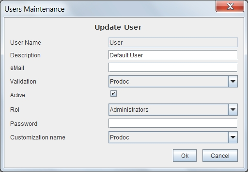

Users Maintenace
When selected in the form Users List one of the options to add, delete, modify or copy the User will appear this form with different fields on or off.
This form contains the information:
- User Name: User ID whose value can not be repeated or changed once assigned. You can have a maximum length of 32 characters. (Eg "AdaByron")
- User Description: Description that allows more information about the user. You can have a maximum length of 128 characters. (Eg, "Jose Fernandez Gomez Gonzalez")
- eMail:E-mail the user. Currently there is no integration with mail server and will only be used as documentation.
- Authentication System Name assigned to the user: Indicates the name of the authentication system for validation of the user as defined among (Authentication System List).
- Flag indicating if active: If this option is checked, the user is active and can be connected to the system. It allows a user to temporarily disable without deleting.
- Name of the assigned Role: Indicates the name of the user's assigned role among defined (Roles List).
- Password: User's passwordDepending on the authentication system, the key may be assigned from OPD or should be assigned in the authentication system.
- Name of the assigned Customization: Indicates the name of the customization the user will use among the defined (Customizations List).

Ver: Users List
Help Index OpenProdoc